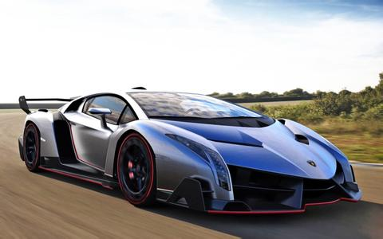

前端小白
关于个人的介绍
介绍本人目前做什么职业,为什么选择前端
12级的学生,15级毕业生,至今在社会上摸爬滚打已经小三年,中间也经历了很多,也做过了很多份工作和兼职,也给自己放过几个月的假,到现在还是找不到自己喜欢的事情.偶然看到计算机专业,知道了前端,慢慢学习了之后,发现把页面用代码写出来还是很漂亮的,对这个产生了一点点兴趣,但是自己好像天生懒惰,对什么事情都无所谓,只是生存一直推着我前进.我该怎么做才能让自己活的更好一点,我不知道,但是努力应该会好一点吧,加油,前端小白



前端小白
介绍本人目前做什么职业,为什么选择前端
12级的学生,15级毕业生,至今在社会上摸爬滚打已经小三年,中间也经历了很多,也做过了很多份工作和兼职,也给自己放过几个月的假,到现在还是找不到自己喜欢的事情.偶然看到计算机专业,知道了前端,慢慢学习了之后,发现把页面用代码写出来还是很漂亮的,对这个产生了一点点兴趣,但是自己好像天生懒惰,对什么事情都无所谓,只是生存一直推着我前进.我该怎么做才能让自己活的更好一点,我不知道,但是努力应该会好一点吧,加油,前端小白